Pawssible
Animal welfare. A clearer path from care to action.
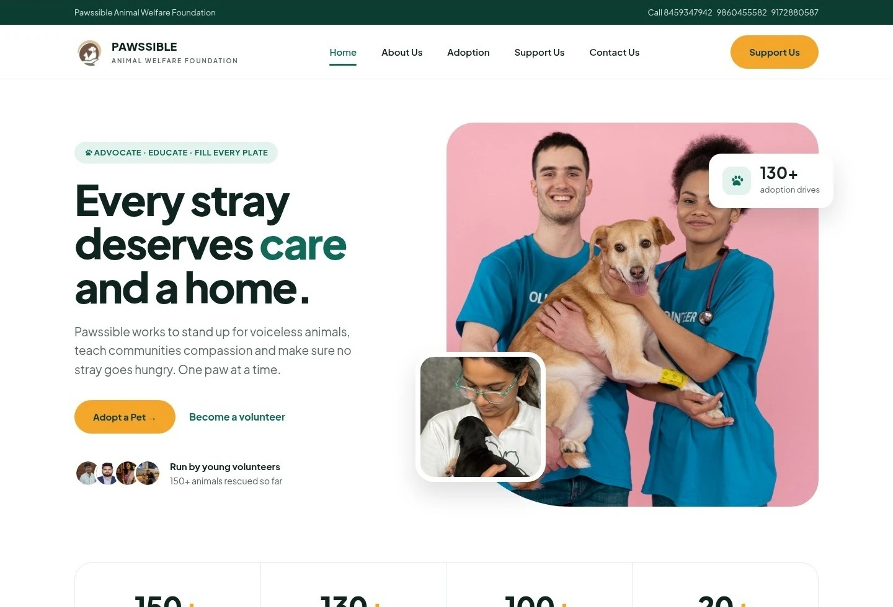
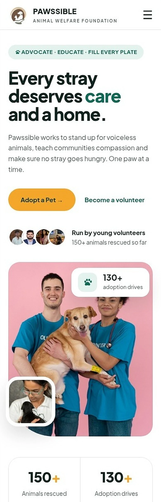
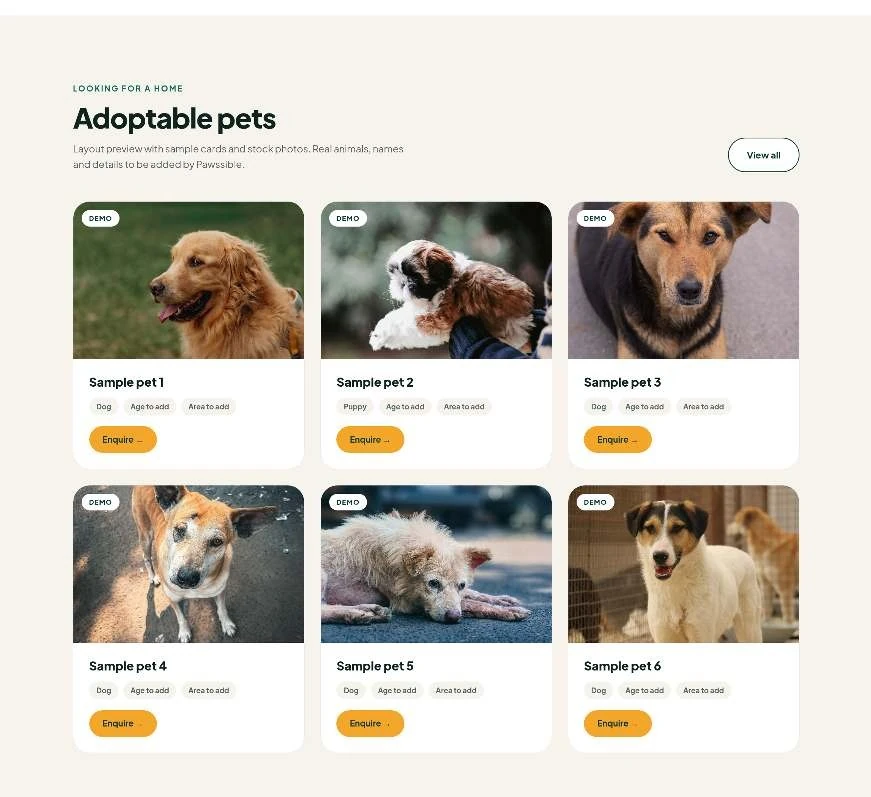
Five pages / Desktop + mobile / Not a live or user-tested release
A restrained website system: clear hierarchy, familiar navigation and visible next steps. Colours reproduced from the supplied design, not official brand standards.
Sans
The website uses one type family. Weight and scale separate headlines, body copy and action labels.
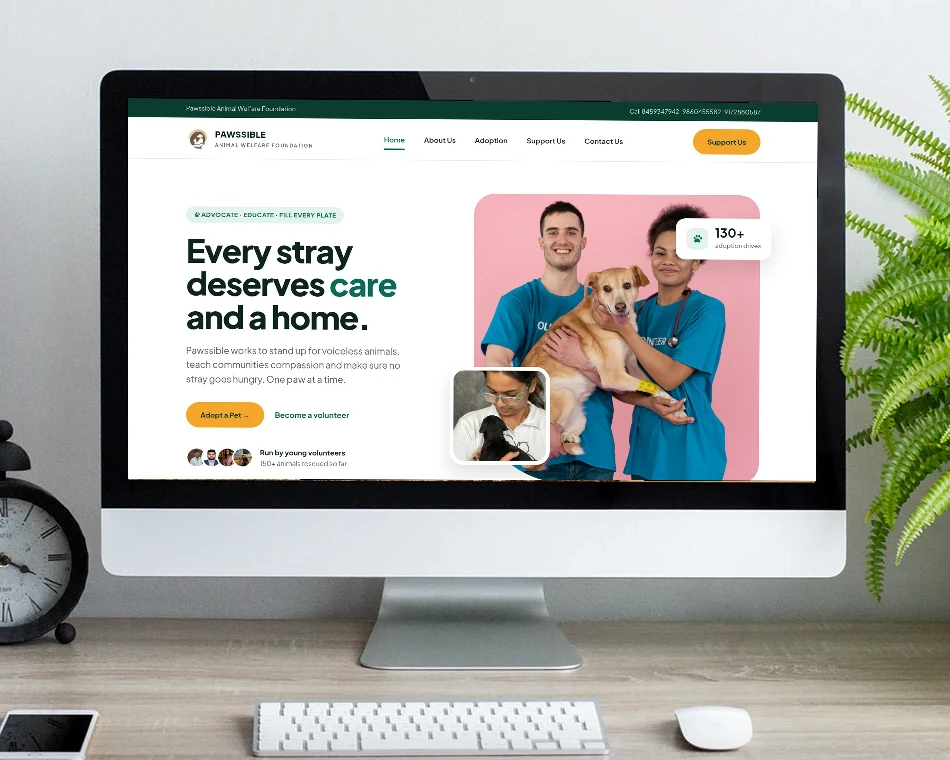
Pawssible brings rescue, adoption and community support together. This website concept gives visitors a clear route to adopt, support, volunteer or contact the team.
Design logic: make the next step visible, keep page roles distinct and use a consistent system across desktop and mobile.
Scope: website only. The Pawssible adoption app is a separate project. No interview findings or measured outcomes are claimed here.
Switch pages and devices to see how one system carries the whole site. Scroll inside the window to read each page.
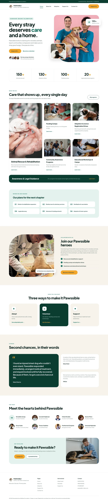
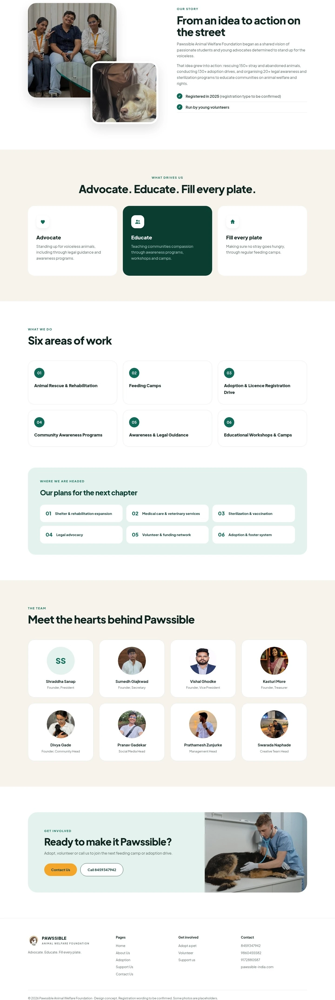
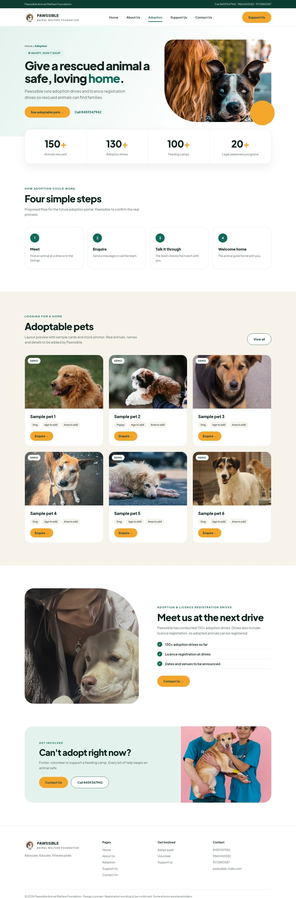
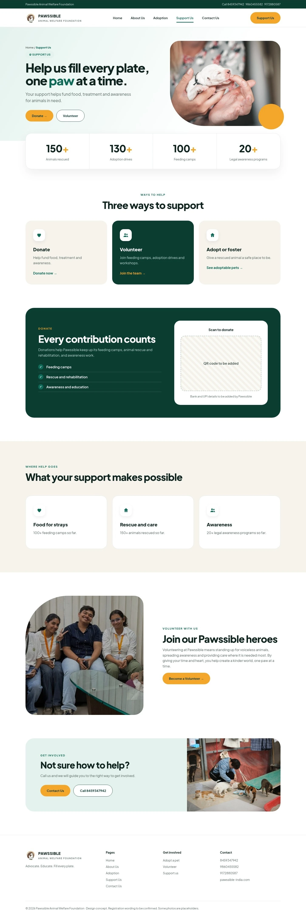
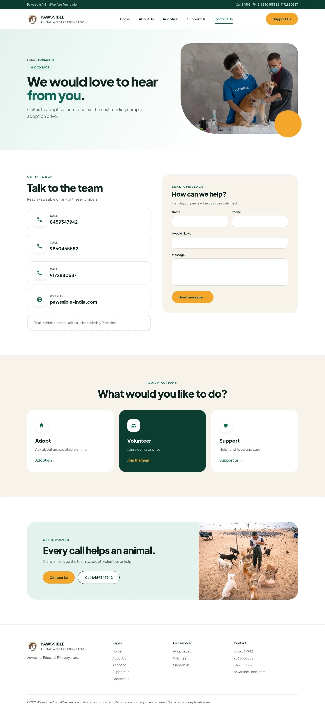
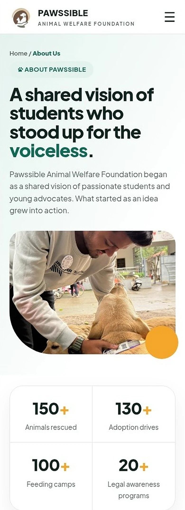
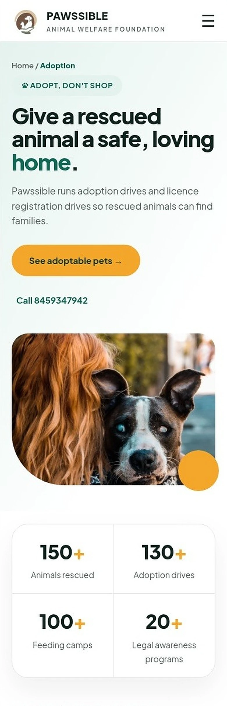
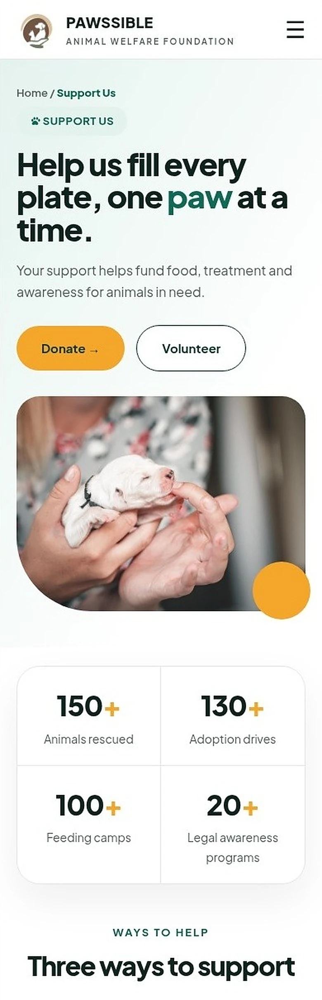
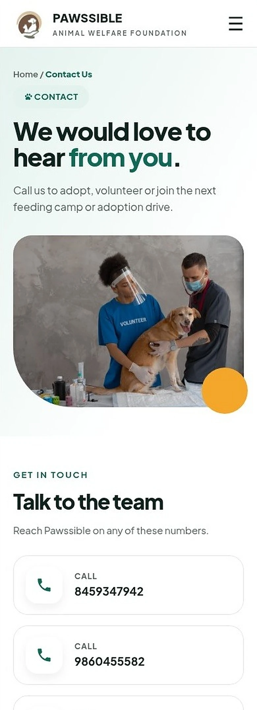
A complete long-form page, from mission and work areas to ways to help. The two phone frames are unchanged website excerpts.
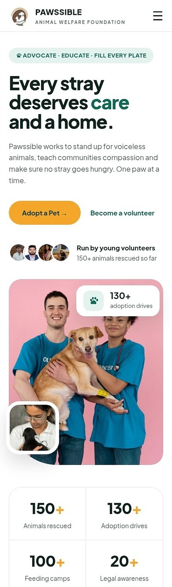
One site. Three ways to help.
Adopt: meet the animals and start a conversation. Support: understand how help is used. Volunteer: find an approachable way to join.
Audience groups are design assumptions, not interview-derived personas. Impact counts, stories and names inside the existing screen still need verification.
The mission, areas of work and people behind the foundation. Mission, team and ways to help form one continuous reading flow.
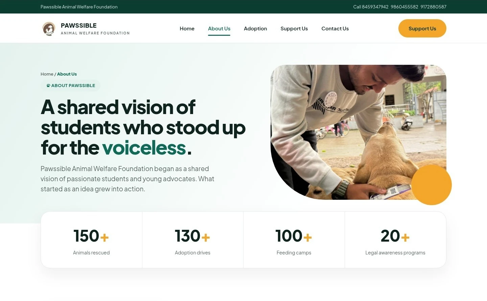
Trust needs specific evidence.
Confirm foundation-owned photography, team details and registration wording before publication. The source includes stock placeholders; the visual revision does not verify their provenance.
Demo listings make the page structure visible. They do not show pets currently available for adoption. The adoption-interest route is proposed.
A predictable first step.
Four proposed stages explain the route from interest to a conversation. Confirm that route with the team before implementation.
- 1MeetFind an animal at a drive or in the listings.
- 2EnquireSend a message or call the team.
- 3Talk it throughThe team checks the match with you.
- 4Welcome homeThe animal goes home with you.
Narrow-screen reading, separate from the Pawssible app. These are excerpts of the approved mobile layouts; responsive behaviour still needs implementation testing.
- Adopt
- Support
- Contact
Consistent navigation and plain-language actions across the website.
Separate routes for money, time and conversation. The donation panel is a placeholder. Forms, consent, delivery and response ownership are not demonstrated.
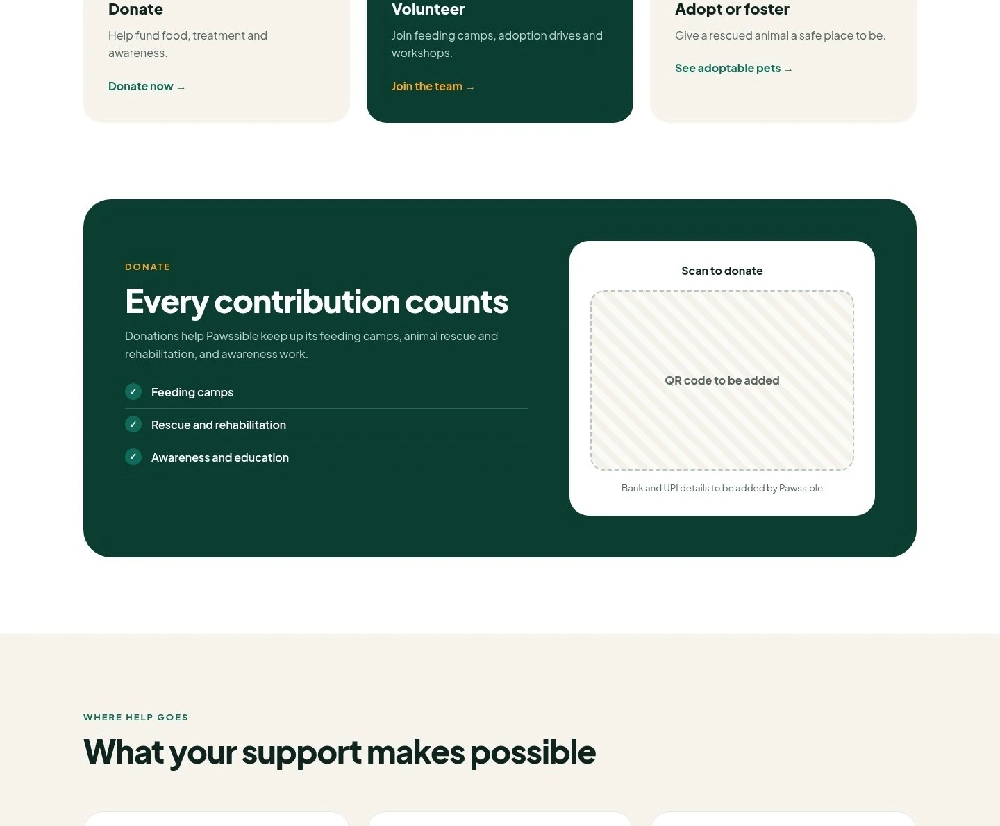
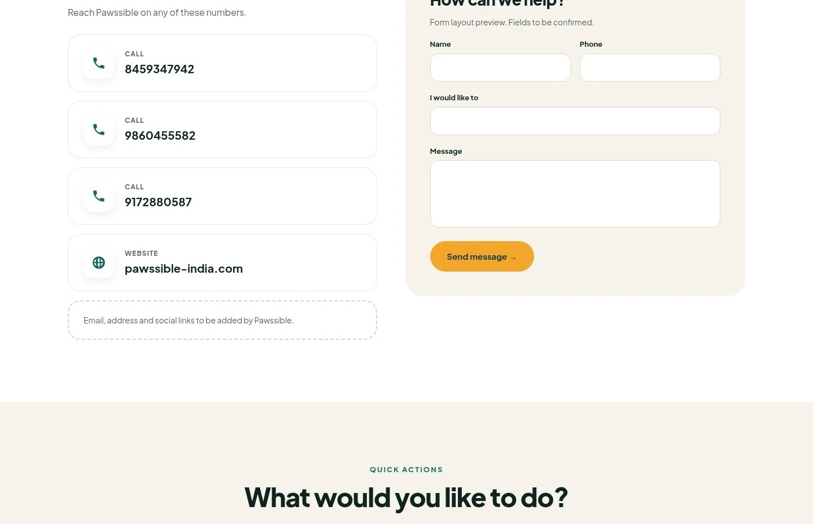
Thank you
for watching
A website that makes care easier to act on.
Portfolio draft. Exact role and contribution remain unconfirmed. This is a design concept, not a live or user-tested release. No user-research findings, launch results or conversion gains are claimed.
Before publication: confirm role, content and image permissions, pet availability, payment beneficiary and QR, contact and registration details. Test accessibility, forms and the adoption route with real visitors.
Presentation reference: Election Training Organization (CICDE) redesign website, PNA Software and Olga Bajura / Behance. Layout adapted for Pawssible in a white, green-accented treatment. Website UI remains unchanged.
Website concept / November 2026